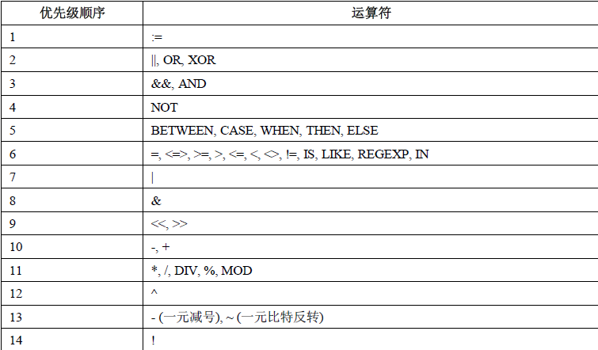

MySQL 演算子
この章では、主に MySQL の演算子と演算子の優先順位について説明します。 MySQL には主に以下の演算子があります：- 算術演算子
- 比較演算子
- 論理演算子
- ビット演算子
算術演算子
MySQL がサポートする算術演算子は次のとおりです：
| 演算子 | 機能 |
|---|---|
| + | 加算 |
| - | 減算 |
| * | 乗算 |
| / または DIV | 除算 |
| % または MOD | 剰余 |
除算および剰余演算において、除数が0の場合は不正な除数となり、戻り値はNULLになります。
1、加算
mysql> select 1+2; +-----+ | 1+2 | +-----+ | 3 | +-----+
2、減算
mysql> select 1-2; +-----+ | 1-2 | +-----+ | -1 | +-----+
3、乗算
mysql> select 2*3; +-----+ | 2*3 | +-----+ | 6 | +-----+
4、除算
mysql> select 2/3; +--------+ | 2/3 | +--------+ | 0.6667 | +--------+
5、商
mysql> select 10 DIV 4; +----------+ | 10 DIV 4 | +----------+ | 2 | +----------+
6、剰余
mysql> select 10 MOD 4; +----------+ | 10 MOD 4 | +----------+ | 2 | +----------+
比較演算子
SELECT 文の条件文では、比較演算子をよく使用します。これらの比較演算子を使用して、テーブル内のどのレコードが条件に適合するかを判断できます。比較結果が真の場合は 1 を返し、偽の場合は 0 を返し、比較結果が不明確な場合は NULL を返します。
| 記号 | 説明 | 備考 |
|---|---|---|
| = | 等しい | |
| <>, != | 等しくない | |
| > | より大きい | |
| < | より小さい | |
| <= | 以下 | |
| >= | 以上 | |
| BETWEEN | 2つの値の間にある | >=min&&<=max |
| NOT BETWEEN | 2つの値の間にない | |
| IN | 集合内にある | |
| NOT IN | 集合内にない | |
| <=> | 2つのNULL値が等しいかどうかを厳密に比較する | 2つのオペランドがともにNULLの場合、その結果値は1になります。一方のオペランドがNULLの場合、その結果値は0になります。 |
| LIKE | あいまい一致 | |
| REGEXP または RLIKE | 正規表現による一致 | |
| IS NULL | 空である | |
| IS NOT NULL | 空でない |
1、等しい
mysql> select 2=3; +-----+ | 2=3 | +-----+ | 0 | +-----+ mysql> select NULL = NULL; +-------------+ | NULL = NULL | +-------------+ | NULL | +-------------+
2、等しくない
mysql> select 2<>3; +------+ | 2<>3 | +------+ | 1 | +------+
3、安全等価
と=の違いは、2つのオペランドがともにNULLの場合、その結果値はNULLではなく1になり、一方のオペランドがNULLの場合、その結果値はNULLではなく0になることです。
mysql> select 2<=>3;
+-------+
| 2<=>3 |
+-------+
| 0 |
+-------+
mysql> select null=null;
+-----------+
| null=null |
+-----------+
| NULL |
+-----------+
mysql> select null<=>null;
+-------------+
| null<=>null |
+-------------+
| 1 |
+-------------+
4、より小さい
mysql> select 2<3; +-----+ | 2<3 | +-----+ | 1 | +-----+
5、以下
mysql> select 2<=3; +------+ | 2<=3 | +------+ | 1 | +------+
6、より大きい
mysql> select 2>3; +-----+ | 2>3 | +-----+ | 0 | +-----+
7、以上
mysql> select 2>=3; +------+ | 2>=3 | +------+ | 0 | +------+
8、BETWEEN
mysql> select 5 between 1 and 10; +--------------------+ | 5 between 1 and 10 | +--------------------+ | 1 | +--------------------+
9、IN
mysql> select 5 in (1,2,3,4,5); +------------------+ | 5 in (1,2,3,4,5) | +------------------+ | 1 | +------------------+
10、NOT IN
mysql> select 5 not in (1,2,3,4,5); +----------------------+ | 5 not in (1,2,3,4,5) | +----------------------+ | 0 | +----------------------+
11、IS NULL
mysql> select null is NULL; +--------------+ | null is NULL | +--------------+ | 1 | +--------------+ mysql> select 'a' is NULL; +-------------+ | 'a' is NULL | +-------------+ | 0 | +-------------+
12、IS NOT NULL
mysql> select null IS NOT NULL;
+------------------+
| null IS NOT NULL |
+------------------+
| 0 |
+------------------+
mysql> select 'a' IS NOT NULL;
+-----------------+
| 'a' IS NOT NULL |
+-----------------+
| 1 |
+-----------------+
13、LIKE
mysql> select '12345' like '12%'; +--------------------+ | '12345' like '12%' | +--------------------+ | 1 | +--------------------+ mysql> select '12345' like '12_'; +--------------------+ | '12345' like '12_' | +--------------------+ | 0 | +--------------------+
14、REGEXP
mysql> select 'beijing' REGEXP 'jing'; +-------------------------+ | 'beijing' REGEXP 'jing' | +-------------------------+ | 1 | +-------------------------+ mysql> select 'beijing' REGEXP 'xi'; +-----------------------+ | 'beijing' REGEXP 'xi' | +-----------------------+ | 0 | +-----------------------+
論理演算子
論理演算子は式の真偽を判定するために使用します。式が真の場合は結果として 1 を返します。式が偽の場合は結果として 0 を返します。
| 演算子 | 機能 |
|---|---|
| NOT または ! | 論理否定（NOT） |
| AND | 論理積（AND） |
| OR | 論理和（OR） |
| XOR | 排他的論理和（XOR） |
1、論理積（AND）
mysql> select 2 and 0;
+---------+
| 2 and 0 |
+---------+
| 0 |
+---------+
mysql> select 2 and 1;
+---------+
| 2 and 1 |
+---------+
| 1 |
+---------+
2、論理和（OR）
mysql> select 2 or 0; +--------+ | 2 or 0 | +--------+ | 1 | +--------+ mysql> select 2 or 1; +--------+ | 2 or 1 | +--------+ | 1 | +--------+ mysql> select 0 or 0; +--------+ | 0 or 0 | +--------+ | 0 | +--------+ mysql> select 1 || 0; +--------+ | 1 || 0 | +--------+ | 1 | +--------+
3、論理否定（NOT）
mysql> select not 1; +-------+ | not 1 | +-------+ | 0 | +-------+ mysql> select !0; +----+ | !0 | +----+ | 1 | +----+
4、排他的論理和（XOR）
mysql> select 1 xor 1; +---------+ | 1 xor 1 | +---------+ | 0 | +---------+ mysql> select 0 xor 0; +---------+ | 0 xor 0 | +---------+ | 0 | +---------+ mysql> select 1 xor 0; +---------+ | 1 xor 0 | +---------+ | 1 | +---------+ mysql> select null or 1; +-----------+ | null or 1 | +-----------+ | 1 | +-----------+ mysql> select 1 ^ 0; +-------+ | 1 ^ 0 | +-------+ | 1 | +-------+
ビット演算子
ビット演算子は、2進数に対して計算を行う演算子です。ビット演算では、まずオペランドを2進数に変換してビット演算を行います。その後、計算結果を2進数から10進数に戻します。
| 演算子 | 機能 |
|---|---|
| & | ビット単位の論理積（AND） |
| | | ビット単位の論理和（OR） |
| ^ | ビット単位の排他的論理和（XOR） |
| ! | ビット反転（NOT） |
| << | 左シフト |
| >> | 右シフト |
1、ビット単位の論理積（AND）
mysql> select 3&5; +-----+ | 3&5 | +-----+ | 1 | +-----+
2、ビット単位の論理和（OR）
mysql> select 3|5; +-----+ | 3|5 | +-----+ | 7 | +-----+
3、ビット単位の排他的論理和（XOR）
mysql> select 3^5; +-----+ | 3^5 | +-----+ | 6 | +-----+
4、ビット単位の反転
mysql> select ~18446744073709551612; +-----------------------+ | ~18446744073709551612 | +-----------------------+ | 3 | +-----------------------+
5、ビット単位の右シフト
mysql> select 3>>1; +------+ | 3>>1 | +------+ | 1 | +------+
6、ビット単位の左シフト
mysql> select 3<<1; +------+ | 3<<1 | +------+ | 6 | +------+
演算子の優先順位
最低優先順位は：:=。

最高優先順位は：!、BINARY、 COLLATE。
その他の拡張